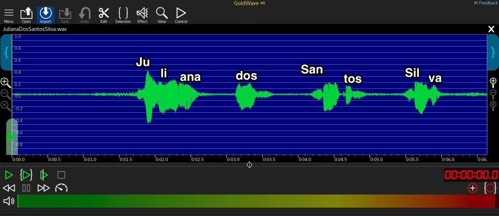
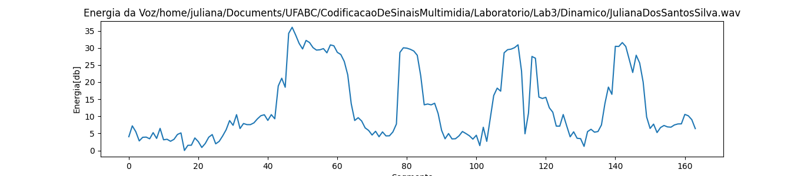
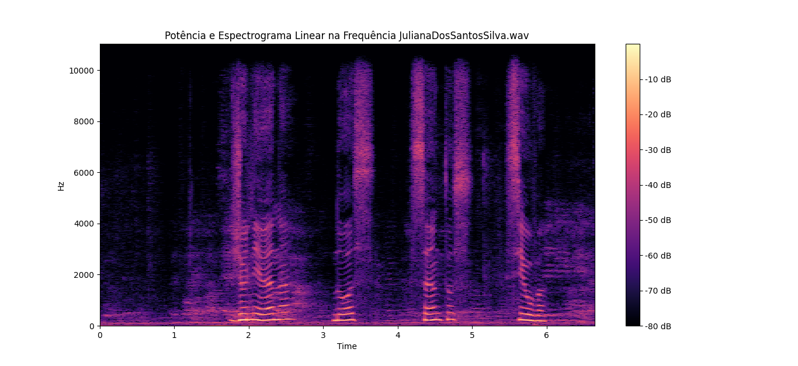

Codificação de Sinais Multimídia - Quadrimestre 3 de 2023
-------------------------
Audiometria com fones envolventes:
Audiometria sem uso de fones:
Teste de visão:
Comentários e conclusões:
Audiometria Fone Envolvente: Nota-se perda auditiva moderada para baixas frequências (250Hz a 500Hz) e leve para médias e altas frequências (1KHz a 8KHz).
Audiometria Fone não Envolvente: Foi utilizado o áudio no notebook no teste sem uso de fones de ouvido. Com exceção da frequência de 8KHz, foi necessário maior intensidade de som para todas as frequências. Ruídos externos podem ter impactado no resultado.
Teste de Acuidade Visual: De acordo com o resultado, a visão de ambos olhos está boa para todos os testes fornecidos. Para a acuidade visual, o o resultado do olho direito foi melhor que o esquerdo.
Detalhes dos testes fornecidos no site: Acuidade visual – verifica a agudez da visão, ou seja, a habilidade de detectar pequenos detalhes. Sensibilidade ao contraste – verifica a habilidade de enxergar contrastes. Visão de cores – verifica a habilidade de detectar diferentes cores e formas. Astigmatismo – verifica se há imperfeições na curvatura da córnea ou lentes. Campo de visão – verifica se há problemas no campo de visão.
-------------------------
Seção de PDS da Voz
Voz falada:
Forma de onda da voz falada:

Energia da voz falada:

Potência e espectograma da voz falada:

Autocorrelações e expectro da vogal "Ju" de Juliana: